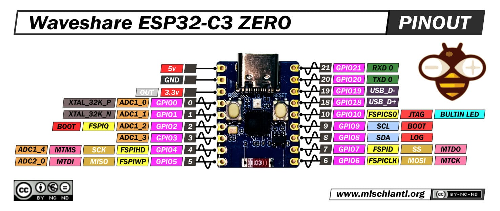

What is the ESP32‑C3 Zero?
The ESP32‑C3 Zero is a small, low‑power microcontroller board built around the ESP32‑C3 chip, featuring a 32‑bit RISC‑V processor, Wi‑Fi, and Bluetooth Low Energy (BLE). It is designed for compact IoT devices, smart sensors, and embedded systems that require wireless communication.
Despite its tiny size, the ESP32‑C3 Zero includes essential features such as GPIO pins, USB‑C programming, onboard flash memory, and support for a wide range of sensors and modules. It is compatible with Arduino, MicroPython, and ESP‑IDF, making it accessible for beginners and powerful enough for advanced developers.
Main Functions
- Provides Wi‑Fi connectivity for IoT devices
- Supports Bluetooth Low Energy (BLE) communication
- Reads sensors and inputs through GPIO pins
- Controls motors, LEDs, relays, and other hardware
- Runs lightweight programs using Arduino or ESP‑IDF
- Acts as a wireless controller or data logger
Technical Specifications
- CPU: 32‑bit RISC‑V @ 160 MHz
- Wireless: Wi‑Fi 802.11 b/g/n + Bluetooth 5 LE
- Memory: 400 KB SRAM + onboard flash
- USB‑C for power and programming
- Low‑power modes for battery operation
- Multiple GPIO pins for sensors and modules

Common Uses
The ESP32‑C3 Zero is widely used in:
- Smart home automation systems
- Wireless sensor networks
- Wearable devices
- Robotics and motor control
- IoT prototypes and rapid development
- Bluetooth‑enabled gadgets